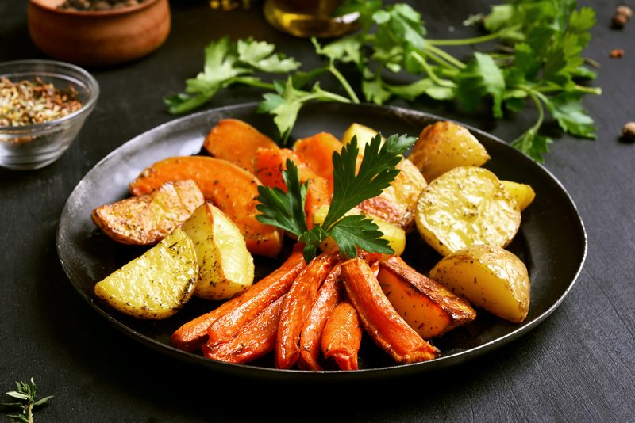
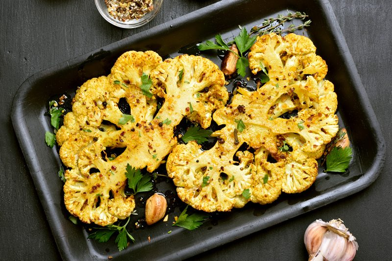
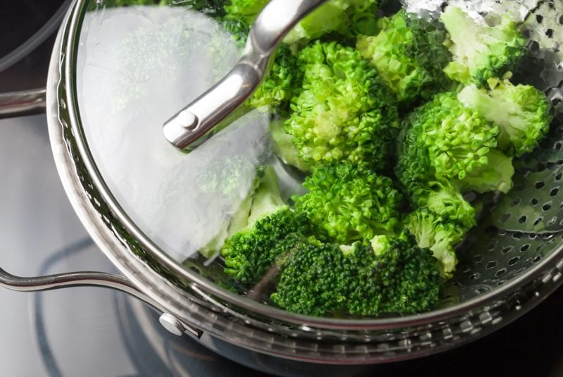
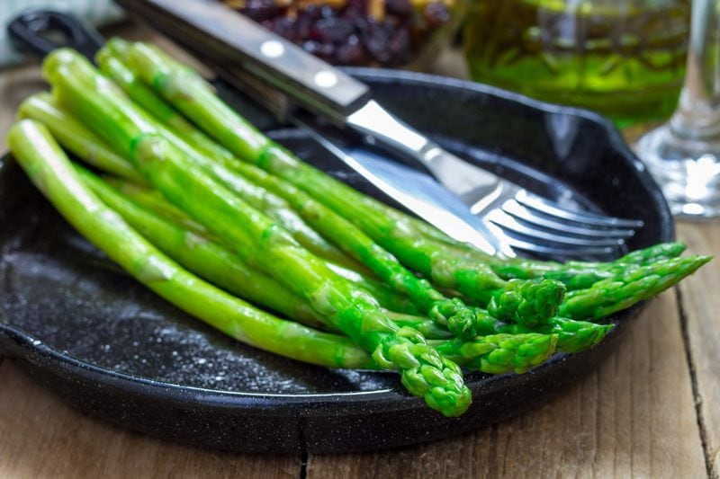
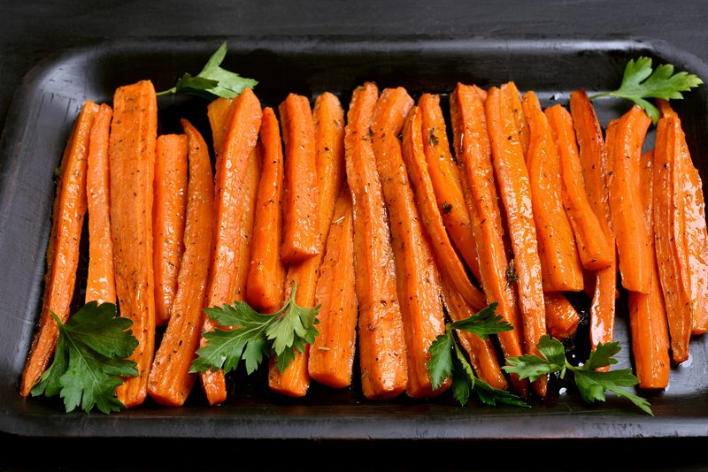
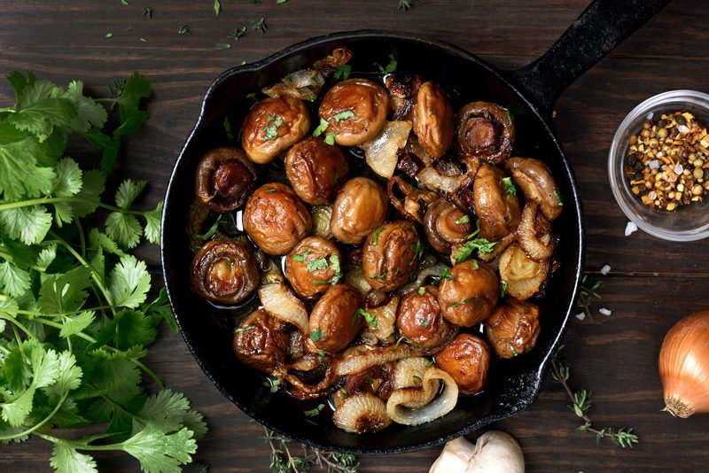
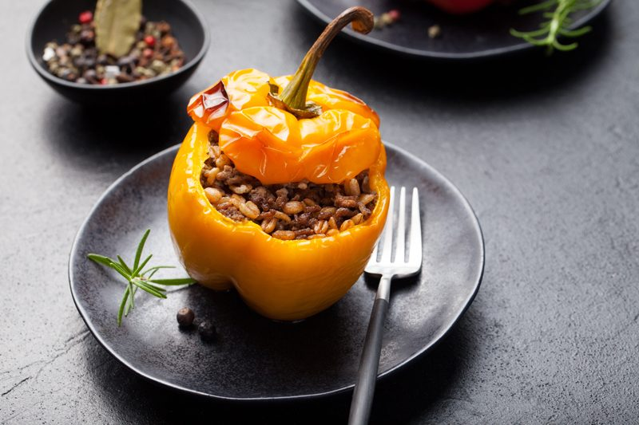
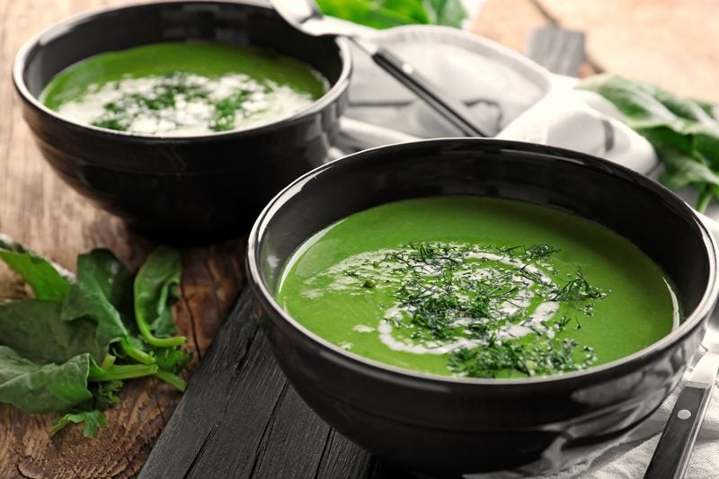

Benefits of Cooking some Vegetables
If you have been traveling through my site, reading every nook and cranny, you might have noticed that I am not a fan of dietary labels. I believe that every one of us is made up of a unique genetic makeup, and we assimilate nutrients differently.
I NEVER want anyone to feel bad about eating cooked foods. So many times, I hear the frustration and confusion of others as their heads spin with thoughts of, “Do I have to eat 100% raw to be healthy?” “What if I eat some cooked foods, have I failed?” “What percentage of raw do I need to be?” “Are all cooked foods bad for you?”
There are some whole foods that just flat out shouldn’t be consumed raw, but there are others that have increased benefits when eaten cooked. That’s not to say that you have to decide whether or not you eat them raw or cooked, it’s about adding more options to your daily menu as well as optimizing some nutrients. Let’s use carrots as an example. You can enjoy cooked carrots as a side dish and add raw shredded carrots to the dinner salad. So as you read down through this posting, keep an open mind and don’t feel torn as to how you have to eat your veggies.

Whether or not you should cook some of your vegetables depends on your health goals, the nutrients involved, and the cooking methods used. Cooking can decrease water-soluble vitamins like B and C, and depending on the method, minerals such as calcium, potassium, magnesium, iron, zinc, and phosphorus can also decline. But at the same time, other nutrients can be amplified or unlocked.
We Must Find Balance
When you were a child, do you remember playing on the teeter-totter at the playground? The enjoyment came when two people of the same size, would hop on and through the springing action of the legs and the force of gravity, you would teeter up and down. Giggling, laughing, while holding on for dear life. But then there were the times when a larger kid would come along and when he or she sat on the other end, up you would go, feet dangling, stranded at the mercy of the person on the other end.
What I am trying to get at is the importance of finding a balance. Some days you might teeter heavier in raw foods, other days you might enjoy cooked food, and then there might be days where you enjoy a combination. Get the best of both worlds. I am sure this isn’t what you were totally expecting to read on a raw food site. I am all for achieving optimal health and what gets YOU there may look different from me or anyone else, and that’s ok. We all teeter to find balance in life.
Comparing the healthfulness of raw and cooked food is complicated, and there are still many mysteries surrounding how the different molecules in plants interact with the human body. Whatever it takes to increase whole foods into your diet, do it. So if you are coming from a cooked diet, change your foods to WHOLE cooked foods, then slowly increase the number of raw foods. Find that balance that brings joy to your life. Eating healthy isn’t meant to be complicated. Often we allow our brain to get in the way and before you know it, you’re all stressed out. I believe stress is as equally damaging to the body as a processed, nutrient-void diet.

Thyroid Issues
If you suffer from thyroid issues, cooking certain vegetables are found to be beneficial. I am sure by now you are aware of a vegetable group that is referred to as the cruciferous family. In their raw state, they are considered to be suppressing your thyroid when eaten in large amounts. Hold on buckwheat! Don’t go writing them off; cruciferous veggies are chalked full of health benefits. They contain cancer-fighting compounds, help reduce inflammation, regulate blood sugar, enhance heart health, and promote estrogen balance.
- If you have hypothyroidism, it is recommended to cook these veggies due to glucosinate (sulfur-containing compounds) which is also a goitrogen that can interfere with your thyroid hormones and affect your metabolism.
- Once cooked, the glucosinolates they contain are deactivated, losing up to 80% of their goitrogenic chemicals, so that they no longer block the uptake of iodine.
- Fermenting these veggies will provide you with important plant enzymes and healthy microflora to populate your inner ecosystem to build your digestive fire.
- Bottom line, if you do have thyroid issues, it’s best only to eat cruciferous vegetables that have been cooked and limit your intake to about one to two servings per day.
- Source (1), (2), (3), (4)
Commonly Consumed Cruciferous Vegetables:
- Arugula
- Bok choy
- Broccoli
- Brussels sprouts
- Cabbage
- Cauliflower
- Chinese cabbage
- Collard greens
- Kale
- Kohlrabi
- Maca
- Mizuna Greens
- Mustard Greens
- Radish
- Rutabaga
- Turnips
- Watercress

Gut-Related Issues
Do you suffer from IBS, constipation, diarrhea, acid reflux, or other digestive issues? If so, certain raw veggies may be making matters worse. Particular vegetables contain insoluble fiber, also known as cellulose, which gives them their shape. If you suffer from digestive issues, you will want to avoid eating those veggies on an empty stomach. They are best eaten when cooked and with other foods that contain soluble fiber. Dicing, mashing, chopping, grating, and blending high-insoluble fiber foods will also make them easier to break down. This process starts the digestion process.
What’s so special about soluble fiber? These veggies are more easily tolerated by your digestive system. It also slows down the absorption of carbohydrates, keeping your blood sugar levels more stable. Soluble fiber helps regulate stool passage through the digestive tract, and as it retains water, it makes the stools softer and bulkier.
Another way to enjoy certain vegetables is to ferment them. This process “pre-digests” the veggies making it easier to absorb. Fermented veggies also contain probiotic microorganisms that help heal the gut. Relieving gut-related issues takes more than just eating the right food, prepared the right way. You might need to introduce some supplements, make sure you are getting plenty of sleep, and good stress management is also just as important.
Vegetables that are high in insoluble fiber include:
- Bell Peppers
- Bok choy
- Broccoli
- Brussels sprouts
- Cabbage
- Cauliflower
- Celery
- Corn, kernel
- Eggplant
- Garlic
- Greens (spinach, kale, mesclun, collards, arugula, watercress, etc.)
- Green beans
- Onions, shallots, leeks, scallions
- Whole peas, snow peas, snap peas, pea pods
Vegetables high in soluble fiber, but lower in insoluble fiber include:
- Beets
- Carrots
- Parsnips
- Plantains
- Rutabagas
- Summer squash
- Sweet Potatoes
- Turnips
- Taro
- Winter squash
- Yams
- Yuca
Bottom Line:
You have to choose your path, one that resonates with your own body. I am not here to advocate just ONE way of eating. Everyone is going to have to find the right level of raw for them. Even with all the science and resources out there telling you what you should or shouldn’t eat, the ultimate measure is how you feel. General nutrition guidelines don’t acknowledge you as an individual. Remember the food you eat can be either the safest most powerful form of medicine or the slowest form of poison.

Asparagus
When I was 14 years old, I started working full time at our local grocery store in Alaska. In my seven years of being in the “grocery line of duty,” I wore many hats. One hat was that of a florist. When I first started in the floral department, I didn’t know a thing about flowers, other than the fact that I loved them. One of my first duties each morning was to cut the ends off of the fresh flower bouquets and place them in specially designed buckets that were hung at each checkout lane.
One day, I was filling all the check stands with daffodils. They were so fresh that the flowers hadn’t even started to open. I was just about done when my store manager approached me. He looked at the flowers, then at me, asking why in the world was I putting asparagus in the buckets? I was mortified! The look on my face must have painted quite the picture because he walked away laughing. I could still hear his giggle as he rounded the corner and disappeared.
I quickly collected all the “asparagus” from the check stands and made my way to the back of the store where the cooler was. My stock area was right next to the produce. I placed the asparagus in boxes and took them to the produce manager. I was about to explain when he interrupted and asked why I was bringing him daffodils. Daffodils? They are asparagus! He assured me they weren’t and then held up an asparagus and a daffodil side by side. I had been the butt of a joke, and I was more than confused. It took me a long time to stop double-checking which was a flower and which was a vegetable. To this day, I still giggle every time I see one or the other.
Why cooked may be better…
- Asparagus can be enjoyed raw or cooked, but many find it difficult to digest.
- The steaming process helps to break down the fiber, making it easier to digest and absorb nutrients like vitamins A, B, C, E, and K.
- Researchers noted that cooking increased the absorption of vital nutrients including beta-carotene, quercetin, zeaxanthin, lutein, phenols, and rutin.
The Drawback of Eating Cooked
- The downside of cooking vegetables is that it can destroy some of the vitamin C in them. The reason is that vitamin C, which is highly unstable, is easily degraded through oxidation, exposure to heat (it can increase the rate at which vitamin C reacts with oxygen in the air), and through cooking in water (it dissolves in water). (2)
Enjoy Cooked
- Steam or blanch your asparagus and serve it with a healthy oil and lemon juice dressing. Healthy fats help your body absorb vitamin A.

Carrots
Did you know that the outer part of the carrot is called the cortex and its primary function is to store starch? The inner core is meant mainly for carrying water and other nutrients to the leaves and stem and also for the transport of prepared food (through photosynthesis) from the leaves to the root.
Why cooked may be better…
- Carrots are known for their high beta-carotene content, thanks to their vibrant orange color. Beta-carotene is an antioxidant that transforms into vitamin A within our body.
- Since carrots are an excellent source of vitamin A (providing 210% of the average adult’s needs for the day), they need to be consumed with a healthy fat for our bodies to absorb that vitamin A.
- Tests have shown that 3% of the total beta-carotene content is released from raw carrots when consumed in pieces. When homogenized (pulped), 21% was released. Cooking increased accessibility to 27%. The addition of cooking oil to the cooked carrot further increased the amount to 39%. (1)
- Cooking carrots also breaks down the cell wall and increases the absorption of its other nutrients.
- Carrot greens can be eaten and are high in vitamin K. If you are on a blood thinner, you know to watch your intake of this vitamin.
Juicing is Better Than Eating Raw Carrot Sticks
- Carrots are more nutritious when eaten cooked than eaten raw (except when juiced).
- Because raw carrots have tough cellular walls, the body can convert less than 25% of their beta-carotene into vitamin A. Juicing breaks down these cellulose-thickened cell walls, freeing up nutrients.
- One thing you have to watch when juicing is the sugar intake. Carrots are higher in natural sugars.
The Drawback of Eating Cooked
- The downside of cooking vegetables is that it can destroy some of the vitamin C. The reason is that vitamin C, which is highly unstable, is easily degraded through oxidation, exposure to heat (it can increase the rate at which vitamin C reacts with oxygen in the air), and through cooking in water (it dissolves in water). (2)
Enjoy Cooked
- Scrub and rinse carrots well to get rid of the dirt or blemishes. If organic, hold onto those carrot skins. Peeling them off can take away some of the nutritional value (carotene and some trace minerals).
- Boiling and steaming (till fork tender) better preserves antioxidants, particularly carotenoids, in carrots than pan-frying.
- Don’t forget to toss with some olive oil so we can get the most of the nutrients that they have to offer.
Sounds all confusing right now, doesn’t it? Please don’t stress over it, from what I shared, you get different benefits from raw, cooked, and juiced carrots… therefore, enjoy them raw, cooked, and juiced! It’s that simple!

Mushrooms
Why cooked may be better…
- Mushrooms have very tough cell walls (called chitin) and are essentially indigestible if you don’t cook them.
- They contain small amounts of toxins, including some compounds that are considered carcinogens. These are destroyed by cooking them thoroughly. Broiling or grilling is best.
- Thoroughly heating them releases the nutrients they contain, including protein, B vitamins, and minerals, as well as a wide range of novel compounds not found in other foods.
- Avoid consuming mushrooms in the wild unless you are absolutely sure you know what you’re picking. There are a number of toxic mushrooms, and it’s easy to get them confused unless you have a lot of experience and know what to look for.
Enjoy Cooked
- Mushrooms can be prepared in a variety of different ways, but some cooking techniques can make them lose their health appeal. A study published in the International Journal of Food Sciences and Nutrition tested various cooking methods to see which helped the mushrooms maintain their nutrients. They used a white button, shiitake, oyster, and king oyster mushrooms in their study. They showed that grilling and microwaving (not a fan of) were the two most efficient ways of retaining their nutrients. “When mushrooms were cooked by microwave or grill, the content of polyphenol and antioxidant activity increased significantly, and there are no significant losses in nutritional value.”

Peppers
You can enjoy bell peppers raw but check to see how you feel after doing so. If you find them hard to digest, you might want to ask yourself if cooking them would help.
Why cooked may be better…
- Bell peppers are an excellent source of carotenoids. Cooking can enhance the bioavailability of these carotenoids.
- It has also been reported that dry heat methods can help with the retention of antioxidants.
- Do not overcook as this can destroy certain antioxidants that may be heat sensitive.
Digestive Issues
- Bell peppers are considered an insoluble fiber, and if you suffer from digestive issues, you will want to avoid eating them on an empty stomach. It is best to eat bell peppers with other foods that contain soluble fiber.
- Dice, mash, chop, grate, or blend high-insoluble fiber foods to make them easier to break down.
- Insoluble fiber foods are best eaten well-cooked.
Enjoy Cooked
- One way that I enjoy bell peppers is to stuff them, then bake them in the oven until fork-tender.
- Look for peppers that can sit on their own, so they don’t fall over while cooking.
- Cut the top of the pepper off and set the pepper bottoms into a glass baking dish, one that is appropriately sized based on how many you are making at once.
- Fill the peppers with a quinoa or rice mixture.
- Pour a small amount of water into the bottom of the baking dish and drizzle the peppers with a little olive oil. Cover and bake for 30 minutes at 350 degrees (F), then uncover and bake until the peppers are soft, about another 15 to 20 minutes.

Spinach
Why cooked may be better…
- The leafy greens boast an impressive nutrient profile that includes the fat-soluble vitamins A, E, and K, as well as the eight water-soluble B vitamins and vitamin C. And let’s not forget iron.
- Drizzling your spinach with acids, such as those found in citrus juices or vinegar, will help you absorb iron.
- Drizzling your spinach with a healthy fat such as olive oil will help with the absorption of vitamins A, E, and K, which are fat-soluble.
Oxalic Acid Caution
- Spinach contains oxalic acid, which hinders the absorption of certain minerals like calcium and iron in your body and may even form kidney stones. Not too worry, there is an easy fix for this.
- Steaming the spinach can help make it easily digestible and remove some of its oxalic acid, which can be tough on a sensitive stomach.
Can Still Enjoy Raw
- There is no need to shun raw spinach because it contains oxalic acid. It is also rich in many essential nutrients, some of which are more available to our bodies when we consume them raw. These nutrients include folate, vitamin C, niacin, riboflavin, and potassium. But if you are sensitive to oxalic acid, it is recommended to enjoy it cooked.
- If you prefer raw spinach, maximize nutrient absorption by topping spinach salads with oil vinaigrette.
- If you use spinach in your smoothies, it can be easy to consume too much oxalic acid especially if you drink them daily. You can steam the spinach first before adding. Remember to change up what goes in your smoothies. By rotating ingredients you will be exposed to more nutrients, so it’s a win-win situation.
Enjoy Cooked
- Wash spinach until free of dirt.
- Place a metal steamer in a medium saucepan that is filled with 1″ of water.
- Bring to a boil. Add the spinach and cover.
- Steam the spinach for about three minutes or until just wilted.
- Remove from steamer and season if desired.
Tomatoes: Cooked With Olive Oil
Tomatoes can be enjoyed raw and cooked. There are benefits of both so why not add both to your world?
Why cooked may be better…
- They are loaded with lycopene which gives them their red color.
- Lycopene has both anti-inflammatory and antioxidant properties, making it a valuable diet component for treating nerve-wasting diseases, cardiovascular problems, and even cancer.
- Lycopene becomes more available to your body in cooked tomatoes. (1, 2,)
Enjoy cooked
- You can best absorb the antioxidant lycopene in tomatoes by pureeing or stir-frying them in olive oil.
- Heat a few tablespoons of olive oil in a saute pan large enough to hold all the tomatoes in one layer.
- Add some diced garlic to the oil and cook over medium heat for 30 seconds. Be careful not to burn the garlic, or it will taste bitter.
- Add the tomatoes, basil, parsley, thyme, salt, and pepper. Reduce the heat to low and cook for 5 to 7 minutes, occasionally tossing, until the tomatoes begin to lose their firm round shape.
- Sprinkle with a little fresh chopped basil and parsley and serve hot or at room temperature.
© AmieSue.com